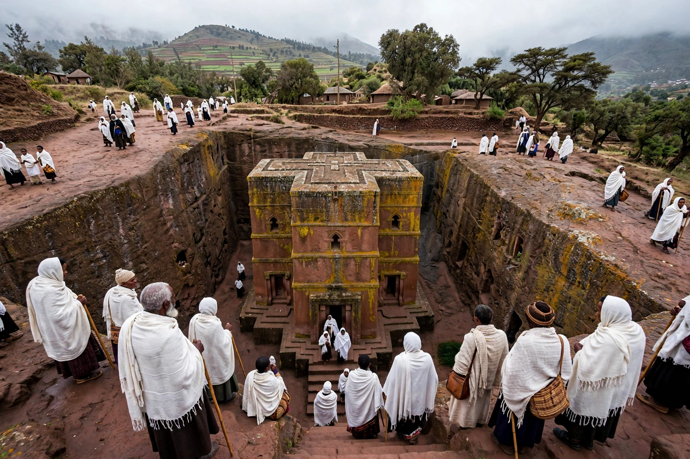

Lalibela (Amharic: ላሊበላ) is a town in the Amhara Region of Ethiopia, famous for its eleven medieval monolithic rock-hewn churches, a major site of Ethiopian Orthodox Christianity and pilgrimage, and a UNESCO World Heritage Site since 1978.

| Location | Amhara Region, Ethiopia |
|---|---|
| Elevation | 2,630 m |
| Population | c. 17,000 (2007) |
| UNESCO | World Heritage Site (1978) |
Tradition attributes the churches to King Lalibela of the Zagwe dynasty in the 12th–13th centuries, who sought to build a 'New Jerusalem' after Muslim conquests halted pilgrimage to the Holy Land. The churches were carved downward from living rock, connected by trenches and tunnels. The most famous, Bete Giyorgis (Church of St George), is cruciform in plan.
The eleven churches fall into three groups separated by the Jordan River trench. They remain active places of worship, staffed by priests and famed for processions at Timkat and other festivals. Lalibela is also known for its airport, its honey and its role in Ethiopian history; the town was briefly contested during the Tigray War in 2021.